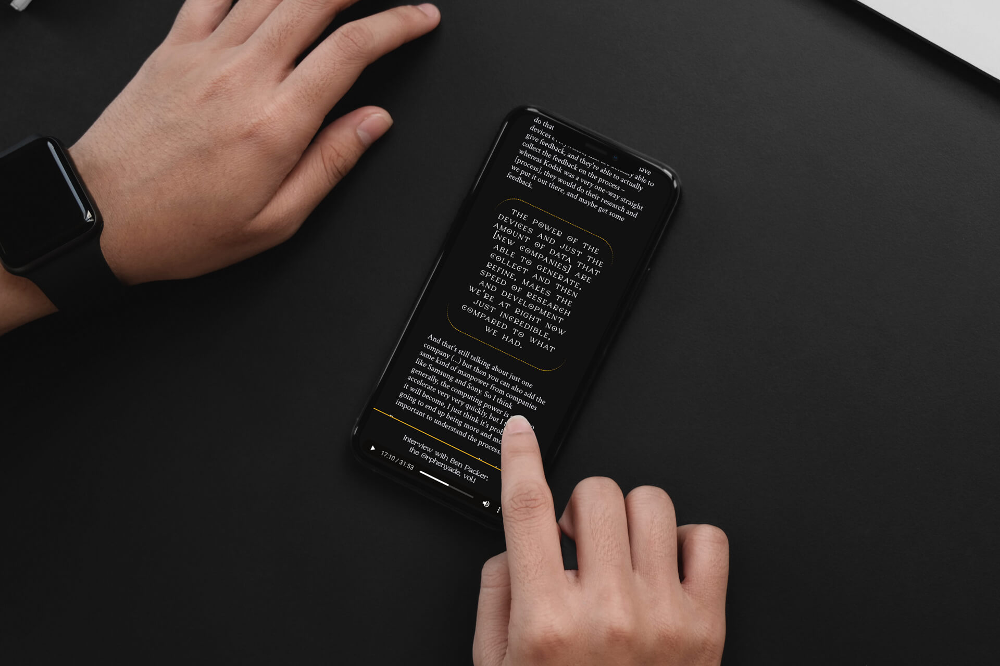
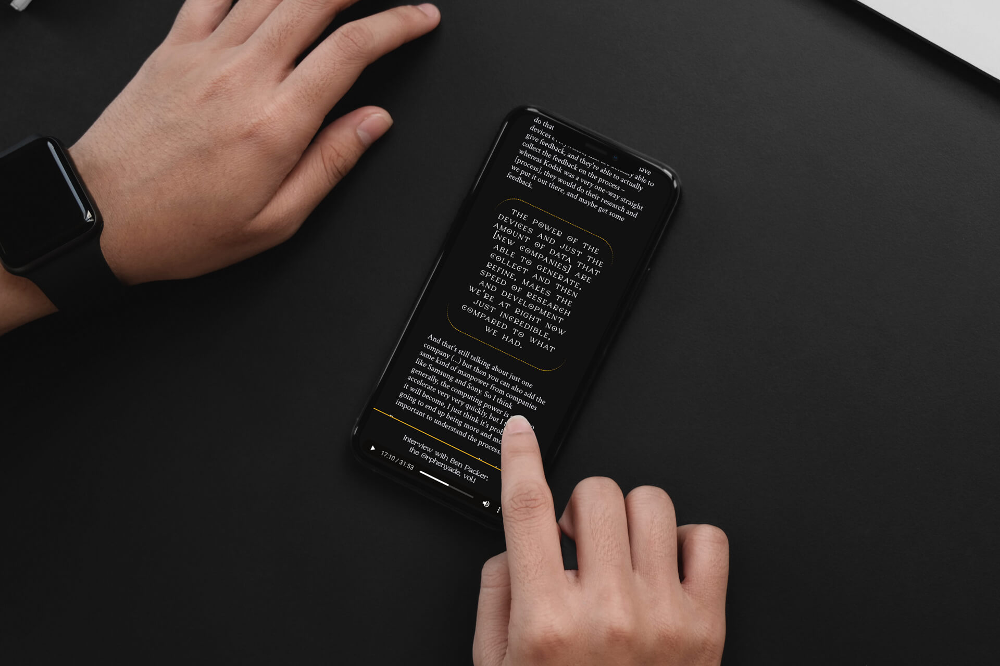
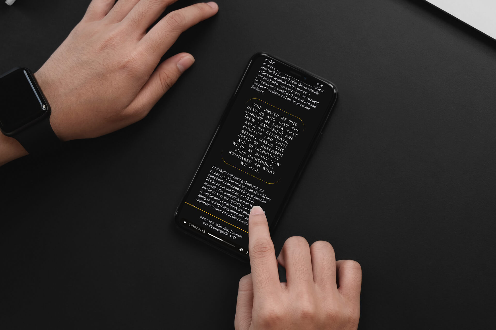

On this project, I wanted to test a combination of audio interviews and textual transcriptions, while exploring some web publishing possibilities.
After going through a phase of testing some unfitting publishing platforms, the project came to be better displayed through a custom built web solution, fully coded from the ground up.
My main takeaway from this project was the key importance of respecting deadlines, and setting clear boundaries of where the project is allowed to go.
